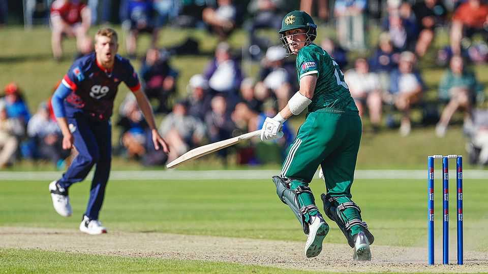
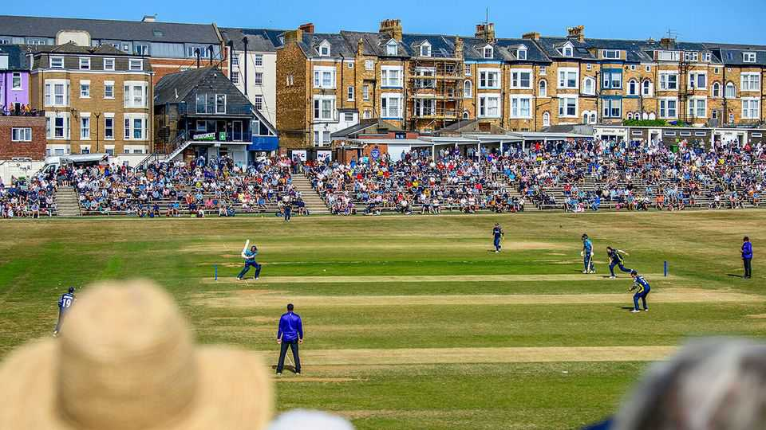

The Hundred’s big-city revolution is reviving an old county-cricket tradition
The sport is having a surprising local renaissance

Aug 20th 2026
“METRO BANK fever” is sweeping English cricket. Named after the sponsor of the county One-Day Cup, symptoms include an unlikely enthusiasm for second-string cricketers and obscure provincial grounds. Demand for tickets at such “outgrounds” has been febrile. Surrey even threatened to punish members who failed to use their tickets for sold-out games at Guildford.
An outground revival was not part of cricket administrators’ modernising plans when they launched The Hundred in 2021. Rather than 18 counties, eight city-based franchises compete in a brash 100-ball tournament featuring fireworks and six-hitting aplenty. Manchester Super Giants won the men’s final on August 16th, and Trent Rockets won the women’s contest. The Hundred has transformed the women’s game in particular, bringing bigger audiences and salaries.
But traditionalists hate it, and counties without a host venue fear being left behind. This year investors paid more than £500m ($680m) for stakes in the eight franchises; four attracted American investors, and four went to owners of Indian Premier League teams. The Oval Invincibles were renamed MI London, part of Mumbai Indians’ global stable.
The One-Day Cup is county cricket’s 50-over competition. It now runs alongside The Hundred, which nabs the best talent. But it gains a consolation prize: a prime slot during the August school holidays. Pre-Hundred, the 2019 One-Day Cup took place mostly in April and May and just 8% of group-stage matches were played at outgrounds. This year 40% were.

The shift is sharpest among counties whose grounds host Hundred games. The Hundred team based in Yorkshire, for example, is SunRisers Leeds; Yorkshire’s One-Day Cup side plays its home games in York and Scarborough. Small grounds bring advantages. A crowd of a few thousand that looks sparse at a major ground used for international cricket feels vibrant at an outground. The dry English summer has helped, too: for the first time, bad weather has not caused a single One-Day Cup group game to be abandoned.
Taking cricket to the shires is an old tradition that had withered. Across England and Wales 51 outgrounds hosted (longer-form) County Championship games in 1965, but just nine did so in 2018, as schedules shrank and the demands of professional cricket grew. Many outgrounds lack modern facilities. Lancashire have responded with AO Farington, a purpose-built, 5,000-capacity second home which opened this summer.
For players, the One-Day Cup can be a stepping stone to The Hundred and riches beyond. For a lucky few, the road to winter suntans in Dubai and Durban could pass through Gosforth and Grantham. On August 11th Rocky Flintoff, the 18-year-old son of a former England star, Andrew “Freddie” Flintoff, smashed a 65-ball century for Lancashire against Somerset. He will surely be upgraded to The Hundred next year, and from there, who knows. But county fans aren’t chasing a glittering future, just a sunny afternoon in a cosy ground watching cricket as they know it.■